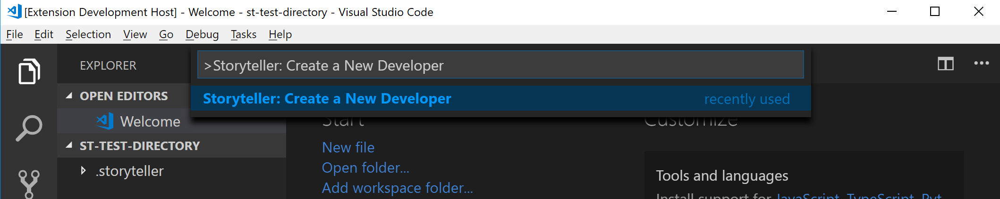
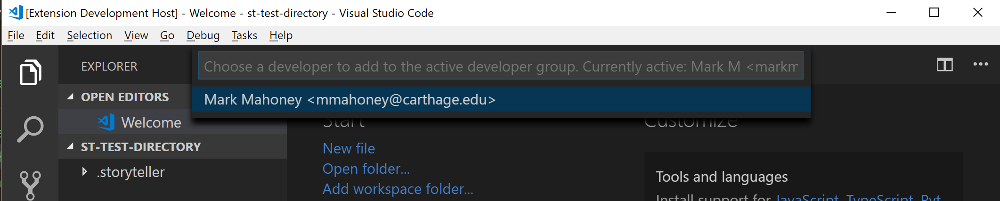

Storyteller: Docs
Managing Developers
Storyteller tracks the active developer or developers who are contributing changes to the code. Every change is attributed to a 'developer group'. This might be a single developer or a group of two or more developers. Each developer's information is displayed during playback.
Viewing the Active Developer Group

To see the current active developers open the command pallette (ctrl/cmd + shift + p) and type in "Storyteller: Active Developers".
A list of the active developers will be displayed.

Creating a New Developer

A new developer is added to the system by opening the command pallette and typing in "Storyteller: Create a New Developer".

Storyteller prompts the user for some information. It tracks the name and email address of the active developers. After a new developer is created they will be prompted to add them to the active developer group.
Tip: If a developer has an avatar with the service Gravatar it will be displayed during the playback.
Adding a New Developer to the Active Developer Group

Developers can be added and removed from the active developer group using VS Code. To see a list of inactive developers that are available to be added to the active developer group open the command pallette and type in "Storyteller: Make Developers Active".

The developer that is selected will be added to the active developer group. Afterward, a message will be displayed with the active developers.
Removing a Developer from the Active Developer Group
Similarly, a developer can be removed from the active developer group by opening up the command pallette and typing in "Storyteller: Make Developers Inactive". A list of active developers will be listed. The one selected will be removed from the active group. Afterward, a message will be displayed with the active developers.